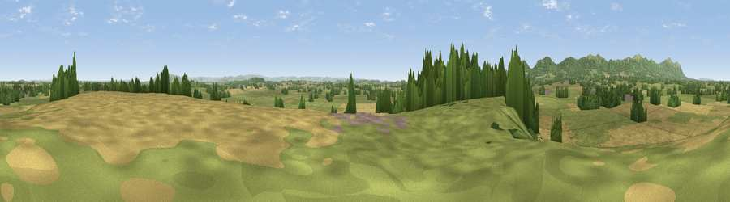

Viewpoint near Castlemorton
#15440 in England · top 40% of its area beats it · near Castlemorton · path 77 mWhere it is
The exact computed spot (SO 81275 37575). Click the marker for map links.
Public access: the nearest public right of way is about 77 m away — the final stretch may cross private land. Computed from Natural England's CRoW access layer and OpenStreetMap rights of way — not the legal definitive map. Always verify locally.
The view, rendered

A 360° render of this exact spot computed from the terrain model, tree cover and land cover — summer colours, afternoon light, calibrated against photographs of famous viewpoints. Real trees, hedges and buildings will differ in detail.
The panorama
Grey silhouette: terrain skyline in each direction (720 bearings, Earth curvature and refraction included). Dashed green: skyline with trees (+15 m) and buildings (+8 m) as obstacles. Blue strip: how far the ground is visible on each bearing.
Where the view opens
Wedge length = distance to the farthest visible ground on that bearing (vegetation-aware). Rings at 10, 25 and 50 km.
What fills the view
49% grassland · 34% cropland · 16% woodland ·
Angular shares of the visible panorama (visual magnitude), not map area. Landscape diversity 0.46 (0–1 Shannon).
Key numbers
More beautiful places nearby
The staircase of upgrades: each row has a higher view potential than everything closer. Driving times are estimates from straight-line distance, calibrated against real road routing — check an actual route before setting out.
| Place | Direction | Drive | Score |
|---|---|---|---|
| Heath Hill | E · 4 km | ~9 min | 58.6 |
| Midsummer Hill | W · 5 km | ~12 min | 83.0 |
| Millennium Hill | WNW · 6 km | ~12 min | 86.9 |
| Worcestershire Beacon | NNW · 9 km | ~17 min | 87.1 |
| Viewpoint near West Quantoxhead | SW · 117 km | ~142 min | 87.9 |
| Viewpoint near West Quantoxhead | SW · 118 km | ~142 min | 88.7 |
| Holdstone Hill | SW · 149 km | ~172 min | 90.2 |
| The Knoll | S · 152 km | ~175 min | 91.0 |
52.03626, -2.27438 · source: screening · position refined by local search. Computed location — check access rights before visiting.